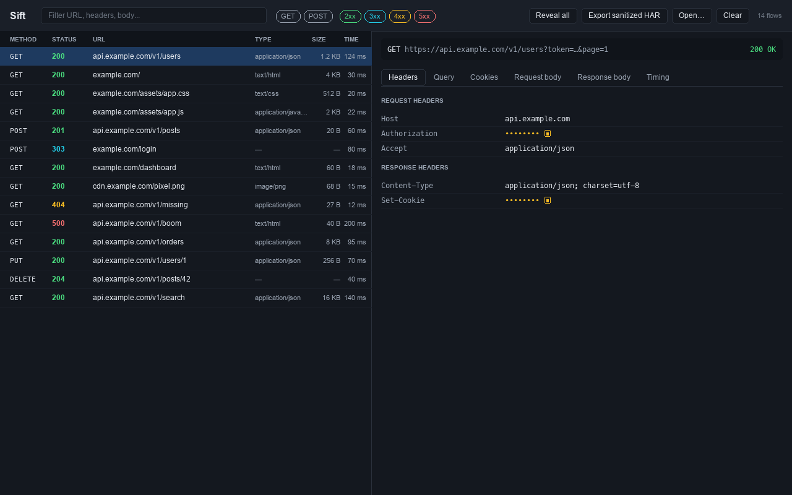
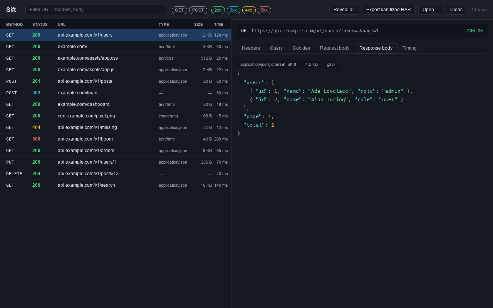

Read a capture. Nothing else.
Sift is a read-only viewer for HTTP session captures: HAR, Fiddler SAZ, and Charles. It parses the file entirely in your browser and never uploads or saves anything.
Drag a capture onto the panel and get a navigable request and response inspector. No proxy, no interception, no account.

What it is
A capture file lands in your inbox or your downloads folder, and you need to read it. Sift opens it locally and shows you the requests and responses in a dense, keyboard-navigable inspector. When you close the panel or reload, the data is gone. There is nothing to clean up, because nothing was kept.
Features
Everything operates on one internal model, so the inspector behaves the same whatever format you opened.
Two-pane inspector
A virtualized request list and a detail pane with tabs for headers, query, cookies, request and response bodies, and timing. Stays fast on captures with thousands of requests.
Secrets masked by default
Authorization headers, cookies, Set-Cookie, common API-key headers, and token-shaped query parameters are hidden until you click to reveal one, or reveal all.
Readable bodies
JSON, XML, HTML, CSS, and JavaScript bodies are pretty-printed and syntax-highlighted. Large bodies wait behind an explicit control so nothing locks up.
gzip, deflate, chunked
Compressed and chunked response bodies are reassembled for display. Brotli bodies are shown as bytes with a clear "not decoded" badge rather than failing.
Sanitized HAR export
Rebuild a valid HAR with every sensitive value replaced by a placeholder, so a capture can be shared without leaking credentials. It is the only file Sift writes.
Search and filter
Free-text search across URL, headers, and body, plus quick filters by method, status class, host, and response type.
Formats it reads
Three capture formats in, one consistent inspector out.
HAR (.har)
The HTTP Archive JSON format exported by browser developer tools and many HTTP clients.
Fiddler (.saz)
Fiddler session archives, unzipped and parsed in memory.
Charles (.xml, .trace)
Charles session exports, parsed defensively across versions.
Not supported: Charles .chls and .tcpsf,
and packet captures (pcap/pcapng). Export HAR from those tools
instead.
How to use it
As a Chrome extension
Open Chrome DevTools, select the Sift panel, and drop a capture onto it. There is no toolbar popup; the extension exists only as a DevTools panel. See the install guide.
As a single HTML file
The same viewer ships as one self-contained HTML file you open with file://. It runs fully offline and requests no permissions. Most auditable, zero install.

Privacy by construction
These are not promises in a settings page. They are properties of how the tool is built.
- In memory only. Captures are parsed and discarded. No
localStorage,chrome.storage,IndexedDB, or disk. - Zero network egress. No outbound requests of any kind. No telemetry, no analytics, no external services.
- No remote code. All code is bundled; a strict content security policy forbids eval and remote scripts.
- No permissions. The extension requests no host permissions and no broad permissions. It cannot see your tabs or browsing.
Read the full privacy policy.